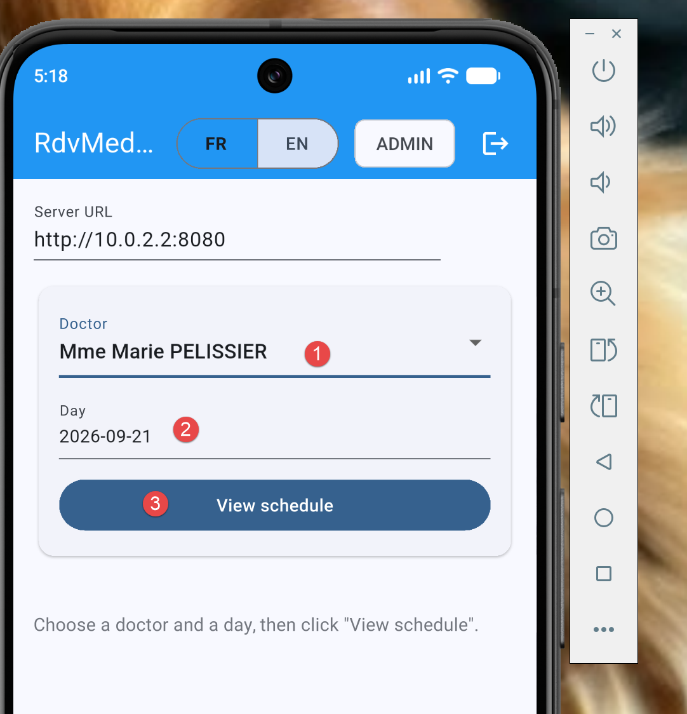

6. Hoofdstuk 5 - De Flutter-applicatie porteren naar mobiel, desktop en web
6.1. Eén broncode, meerdere compilatiedoelen
Dit is de kern van dit hoofdstuk en de bestaansreden van deze cursusvariant: GEEN ENKELE regel van hoofdstuk 4 ([lib/], [pubspec.yaml], [assets/]) verandert, ongeacht het gekozen doel. De applicatie “porteren” komt hier neer op het kiezen van een ander COMPILATIECOMMANDO ([flutter run -d <target>] of [flutter build <target>]), zonder ooit widgets te schrijven, te dupliceren of aan te passen. Dat is heel anders dan wat een port zou hebben vereist met de tools die in de rest van deze cursus aan bod komen: een [Vue.js]/[React]/[Angular]-client draait alleen in een browser NATIEF; om het naar mobiel te porteren is een tool van DERDEN nodig ([Cordova]/[Capacitor], in deze cursus niet gebruikt) die de client verpakt in een native omhulsel met in werkelijkheid een ingebouwde browser (een [WebView]): de code blijft ongewijzigd, maar het is NOG STEEDS geen native uitvoerbaar bestand, in tegenstelling tot wat [Flutter] hier voor mobiel en desktop produceert (zie hoofdstuk 3, “Wat Flutter niet is”).
De zes doelen ([Android], [iOS], [macOS], [Windows], [Linux], [web]) zijn STANDAARD ingeschakeld in elk project dat met [flutter create] is aangemaakt sinds [Flutter 3] (zie hoofdstuk 1); aan de projectkant is geen configuratie nodig om er een toe te voegen. De enige verschillen tussen de doelen zijn: de native compilatietools die op de ontwikkelmachine zijn geïnstalleerd ([Xcode], [Visual Studio], [GTK]...), het exacte commando dat wordt uitgevoerd en, alleen voor mobiel, een netwerkconfiguratiedetail dat verderop in dit hoofdstuk wordt beschreven.
6.2. Webdoel
Het doel dat al in hoofdstuk 2 is gebruikt ([flutter run -d chrome]). Twee commando’s volstaan:
[flutter build web] genereert een zelfstandige map [build/web/] ([index.html], gecompileerd [JavaScript] of [WebAssembly], resources) die op ELKE statische webserver kan worden uitgerold ([Nginx], [Apache], een eenvoudige [npx serve]...), precies zoals de map [dist/] die door [npm run build] aan de [Vue.js]/[Vite]-kant wordt gegenereerd. Deze build blijft een [JavaScript]-bestand dat door een browser wordt geserveerd: hij blijft dus afhankelijk van een [NestJS]-server die vanuit die browser BEREIKBAAR is, en dus van [app.enableCors()] (zie [src/main.ts] op de server); dat is al actief, zodat voor dit doel aan de serverkant geen wijzigingen nodig zijn.
Eén aandachtspunt dat specifiek is voor dit doel: het veld “Server-URL” op het aanmeldscherm (zie [_ServerUrlField] in [lib/app.dart], hoofdstuk 4) moet dan verwijzen naar een adres dat BEREIKBAAR is vanuit de browser waarin de applicatie draait; [http://localhost:8080] is acceptabel zolang de [NestJS]-server op DEZELFDE machine als de browser draait.
6.3. Desktopdoel
Drie besturingssystemen, drie sets native vereiste tools (zie hoofdstuk 1), maar [flutter]-commando’s die qua vorm identiek zijn:
Elk [flutter build <target>]-commando produceert een ZELFSTANDIG native uitvoerbaar bestand ([.app] op macOS, [.exe] + bijbehorende bibliotheken op Windows, een [ELF]-binary op Linux), in [build/<target>/]: een uitvoerbaar bestand dat, anders dan de webbuild, in GEEN ENKELE browser en op GEEN ENKELE [WebView] draait: het is native code die rechtstreeks op het besturingssysteem draait, met een eigen venster en titelbalk, beheerd door [Flutter] zelf.
Dit doel vereist GEEN enkele bijzondere netwerkconfiguratie: een desktopapplicatie draait op dezelfde machine als de gebruiker en benadert [http://localhost:8080] precies zoals elk ander programma dat op die machine is geïnstalleerd (met het veld “Server-URL” op het aanmeldscherm kunt u, net als bij de andere doelen, zo nodig naar een externe server verwijzen).
Dit levert het volgende resultaat op:

Het scherm hierboven is niet afkomstig uit een browser, maar uit een Windows-applicatie. Om dit te laten werken, moeten bepaalde tools beschikbaar zijn:
- Regel 2: Visual Studio moet zijn geïnstalleerd;
Typ het volgende commando om een duidelijk beeld te krijgen van wat er in uw Flutter-project ontbreekt:
6.4. Doelemulators
De Flutter-app is getest op een Android-emulator:
Het resultaat in de emulator:

- Let op de URL in [1];
Aanmelden met admin / admin levert het volgende resultaat op:

Vul het formulier in en verstuur het:

Hierboven ziet u het tijdvak dat we met de webapp hebben gereserveerd.
6.5. Mobiel doel
Opmerking: de reviewer heeft dit gedeelte niet getest.
Dit is het gebied dat de meeste aandacht vereist, vanwege een detail dat specifiek is voor het netwerk van de emulator/simulator.
6.5.1. De netwerkvalkuil voor mobiel: localhost verwijst niet langer naar de ontwikkel-pc
Dit is HET detail dat u voor dit doel moet kennen, los van [Flutter] zelf: [localhost] (of [127.0.0.1]) verwijst in het veld “Server-URL” van het aanmeldscherm ALTIJD naar de machine die de code uitvoert, en een mobiele emulator/simulator is een VIRTUELE machine die LOS STAAT van de ontwikkelmachine waarop de server ([NestJS]) draait, ook al lijken de twee “op dezelfde computer te staan”.
- [Android]-emulator (aangemaakt met [Android Studio]): gebruik [http://10.0.2.2:8080], een speciaal adres dat eigen is aan de officiële [Android]-emulator en dat automatisch doorverwijst naar [localhost] van de hostmachine (de ontwikkel-pc).
- [iOS]-simulator (alleen macOS): [http://localhost:8080] werkt rechtstreeks, omdat de [iOS]-simulator het netwerk van de hostmachine deelt (anders dan de [Android]-emulator).
- Fysiek apparaat ([Android] of [iOS], verbonden met hetzelfde wifinetwerk als de ontwikkel-pc): gebruik het LOKALE [IP]-adres van deze pc op dit netwerk (bijvoorbeeld [http://192.168.1.42:8080]), nooit [localhost] of [10.0.2.2], aangezien beide in dit geval naar het mobiele apparaat zelf verwijzen.
6.5.2. Twee aanvullende beperkingen die specifiek zijn voor het mobiele apparaat
- [Android] (vanaf API 28) blokkeert standaard al het CLEARTEXT-[HTTP]-verkeer (niet versleuteld met [https://]); aangezien de server van deze cursus in eenvoudige modus op [HTTP] luistert, moet een [Android]-applicatie die KLAAR IS VOOR PRODUCTIE een expliciete uitzondering declareren ([android:usesCleartextTraffic="true"] in het gegenereerde [Android]-manifest, of een fijnmaziger netwerkbeveiligingsconfiguratie); dit is een native configuratie-instelling in [android/], buiten de [Dart]-code die in dit document wordt gepresenteerd.
- [iOS] hanteert een vergelijkbaar beleid, [App Transport Security] ([ATS]), dat standaard ook onversleuteld [HTTP] blokkeert; een gelijkwaardige uitzondering wordt gedeclareerd in [ios/Runner/Info.plist] ([NSAppTransportSecurity], [NSAllowsArbitraryLoads], of, specifieker, een uitzondering die uitsluitend op het domein van de ontwikkelserver is gericht).
Deze twee instellingen gelden ALLEEN voor ontwikkeling en demonstratie met een onversleutelde [HTTP]-server, zoals die in deze cursus wordt gebruikt; een echte productie-uitrol zou de [NestJS]-server zelf in [https://] beschikbaar stellen (bijvoorbeeld achter een [reverse proxy] zoals [Nginx]), waardoor deze twee uitzonderingen overbodig worden.
6.5.3. Een smaller scherm: de valkuil van de lay-out
Een laatste verschil dat specifiek is voor mobiele apparaten heeft niets met het netwerk te maken: een telefoon in portretstand is slechts ongeveer 360 pixels breed (in logische pixels van [Flutter]), tegenover enkele honderden meer in een browser- of desktopvenster. Een scherm dat voor een groot beeldscherm is ontworpen, kan op een telefoon dan ook onbruikbaar worden: dat gebeurde met de eerste versie van het client van dit document, getest op een [Android]-emulator. De keuzebalk voor arts, dag en knop ([doctor_day_picker.dart]) plaatste drie velden naast elkaar in één [Row] en de titelbalk ([app.dart]) toonde alles tegelijk: de emulator moest in landschapsstand worden gezet om alles te zien. Hoofdstuk 4 toont de oplossing. Hieruit volgen twee regels:
- Ga nooit uit van een bepaalde breedte. Controleer om een lay-out te kiezen de werkelijk beschikbare breedte, ofwel op een specifieke plek in de boom met [LayoutBuilder] ([constraints.maxWidth]), ofwel voor het hele scherm met [MediaQuery.sizeOf(context).width], en kies dan [Row] (breed scherm) of [Column] (smal scherm).
- Test vroeg op een smal scherm: gebruik de emulator in portretstand of een [Chrome]-venster dat u smaller maakt. In debugmodus meldt [Flutter] dat de inhoud te breed is met een geel-zwarte banner met de tekst “RIGHT OVERFLOWED BY … PIXELS” in de applicatie en een bericht in de console.
Dit is niet in tegenspraak met de volgende constatering: de lay-out past zich aan op basis van de GROOTTE van het scherm, nooit op basis van het platform; nergens komt [if (kIsWeb)] voor. Een browser- of desktopvenster smaller maken activeert precies dezelfde “smalle” lay-out als een telefoon.
6.6. Overzichtstabel
- [web] — [flutter run -d chrome] / [flutter build web] — gecompileerd naar [JavaScript]/[WebAssembly], uitgevoerd door een browser — Server-URL: [localhost] (dezelfde machine).
- [desktop] (macOS/Windows/Linux) — [flutter run -d <os>] / [flutter build <os>] — native [AOT]-compilatie, zelfstandig uitvoerbaar bestand — Server-URL: [localhost] (dezelfde machine).
- [mobile] (Android-emulator) — [flutter run] — native [AOT]-compilatie — Server-URL: [10.0.2.2] (speciaal adres voor de emulator).
- [mobile] (iOS-simulator) — [flutter run] — native [AOT]-compilatie — Server-URL: [localhost] (netwerk gedeeld met de host).
- [mobile] (fysiek apparaat) — [flutter run] — native [AOT]-compilatie — Server-URL: lokaal [IP]-adres van de ontwikkel-pc, + uitzondering [cleartext]/[ATS].
6.7. Wat NIET verandert in de Dart-code
Ter afsluiting van dit hoofdstuk is het goed te benadrukken wat NIET hoefde te worden geschreven of aangepast om deze drie doelfamilies te bedienen: in hoofdstuk 4 komt geen enkele voorwaarde [if (kIsWeb) { ... } else { ... }] voor, geen apart bestand [_mobile.dart]/[_web.dart] en geen extra abstractiebibliotheken. De paar keuzen die al in hoofdstuk 4 zijn gemaakt, volstaan op zichzelf om deze code over de drie doelfamilies draagbaar te maken: [shared_preferences] (in plaats van [localStorage], dat browserspecifiek is) voor persistentie, [rootBundle.loadString(...)] (in plaats van een [fetch] naar een webserver) voor de ingebedde vertaalwoordenboeken en het pakket [http] (in plaats van een browserspecifieke API) voor het netwerkverkeer. Dit is precies wat de inleiding van dit document beloofde: [a single Flutter codebase is enough to build a mobile app, a desktop app and a web app].